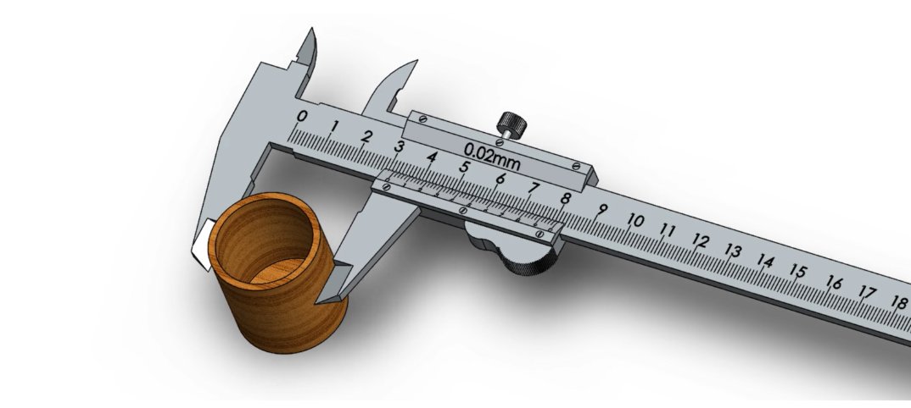
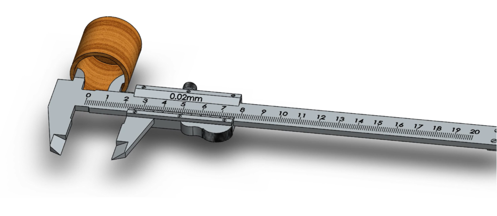
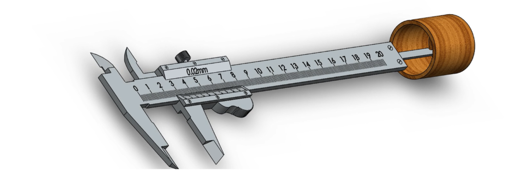
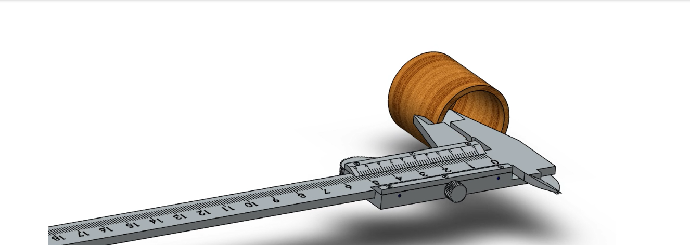

Procedure
Outer Diameter Measurement
- Unlock lock screws – loosen the locking screw.
- Open outer jaws using the finger hook/roller.
- Place the workpiece between the two outer jaws.
- Close the jaws gently using the finger hook until they touch the workpiece.
- Tighten the lock screw to freeze the reading.
- Take the reading from Main scale + Vernier scale.

Fig (a): step1
Inner Diameter Measurement
- Unlock the lock screw.
- Open the inner jaws inside the hole.
- Gently expand the inner jaws until they touch the internal surface.
- Tighten the lock screw.
- Read: Main Scale + Vernier Scale.

Fig (b): step2
Depth Measurement
- Unlock the screw.
- Pull the depth rod out by sliding the scale.
- Place the caliper base on the top surface of the hole.
- Extend the depth rod until it touches the bottom surface.
- Tighten lock screw.
- Take the reading.

Fig (c): step3
Thickness Measurement
-
(Thickness = difference between two parallel surfaces)
- Use outer jaws.
- Place jaws on the two faces whose thickness you need.
- Close jaws until they touch.
- Lock screw.
- Read the measurement.

Fig (d): step4